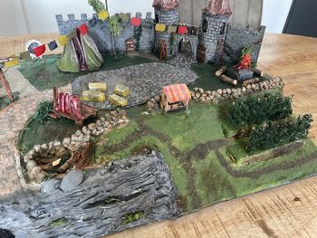
Overview right side
Here we have the townsquare with a fortune telling tent, a small stage and a few hay bales for the audience. In front of that is the small vineyard that belongs to the castle. RIght there is a large fire place where the fire is still burning (It's too hard to put it off when you're drunk...). The ladder that stands to the castle was used to hang up the party garlands.
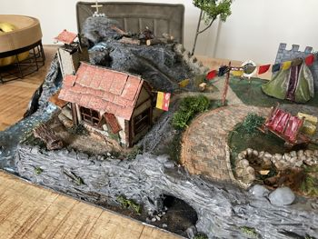
Overview left side
Here is a small house of one of the villagers. He lives in a nice places near a small stream with a waterfall. On top of the hill there is a second fire place that still smolders a bit. You can reach it using the (natural) stairs in the back. No one knows why there is a small cross on the hills, but that's what people do these times.
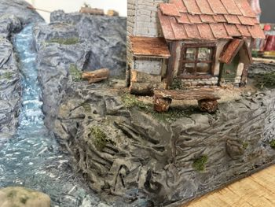
The house
The house with the stream. Under the small roof there is an even small woodpile to put in the stove. But it's summer now so not much wood is needed. In the rocks below you see a small inscription stated the letters R and G. No one knows why it's there...
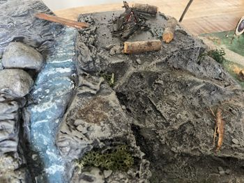
Up the hill
A bit higher on the hill there is fire that is smolding a bit. No one knows how they managed to get the tree trunks up here...
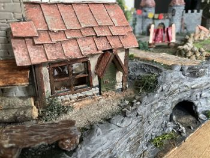
The house and the cave
From the house they have a nice few on the square and the castle. Below the house there is a cave. The story goes that it contains a secret passage to the castle.
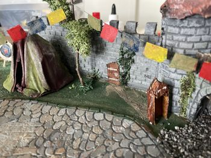
The door in the castle wall
Isn't it strange to add a not-so-strong looking small wooden door to the castlewall? Well, the story goes that the guard who must stay in front of the castle the whole day was not allowed to enter the castle through the official gate. So they found another way...
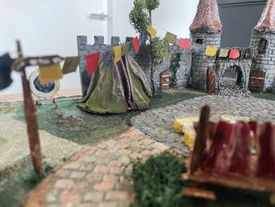
A view of the townsquare
The townsquare looks a bit desolate without people. Last day it was full of people here, but now they are home and what left is a fortune telling tent, a stage and an empty square.
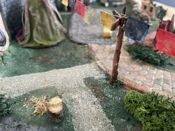
Where's the wood from?
Maybe you asked yourself where all the wood trunks comes from. Well here is the answer...
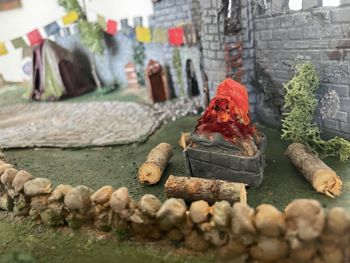
The everlasting fire
The fire is still burning while nobody is there. Luckely they don't have overzealous smoke detectors these days...
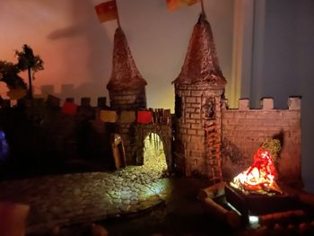
Night falls
When night falls you can see how many light the fire gives. There is also light burning at the castle gate.
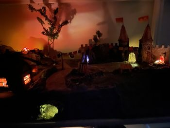
The townsquare by night
It seems that the fortune teller is still in her tent. What's she up to? The fire on the top of the hill is even still smolding. And what's that light in the cave?
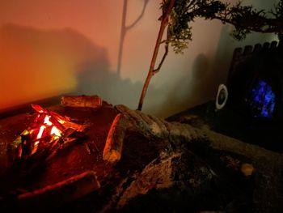
Goodbye and goodnight
The owners of the house has had a small afterparty up here, but they eventually also returned home. Now everything is peaceful and quiet.
{kind=link}
{kind=link}
{kind=link}
{kind=link}
{kind=link}
{kind=link}
{kind=link}
{kind=link}
{kind=link}
{kind=link}
{kind=link}
{kind=link}